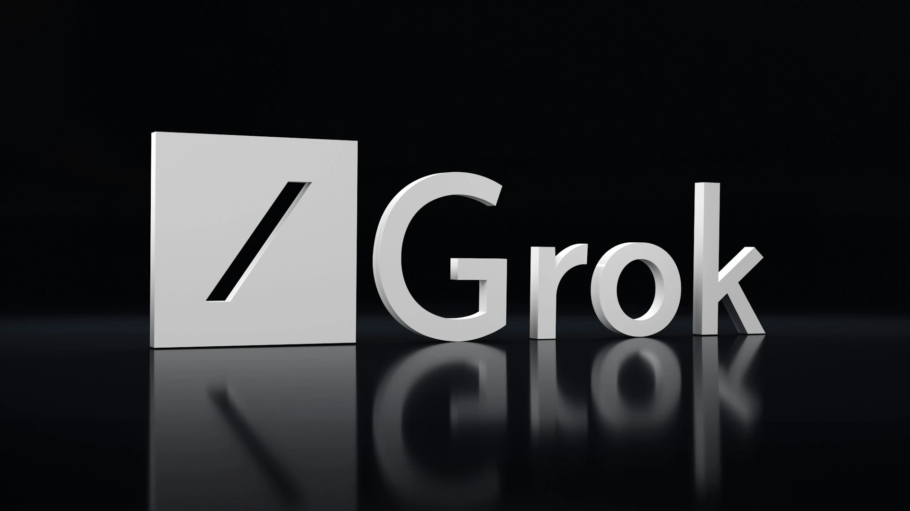

Grok 3: Elon Musk'ın Yeni Yapay Zekası
Elon Musk ve xAI tarafından geliştirilen **Grok 3**, yapay zeka dünyasında devrim yaratmaya hazırlanıyor. OpenAI ve Google DeepMind gibi devlerle rekabet eden Grok serisi, en yeni sürümünde büyük yenilikler sunuyor.
Grok 3, **gelişmiş doğal dil işleme (NLP) yetenekleri**, **gerçek zamanlı veri analizi** ve **duygusal zeka desteği** ile ön plana çıkıyor. Musk’ın iddiasına göre, Grok 3 artık insan benzeri düşünme kabiliyetine daha da yakınlaşarak, sorulara yaratıcı ve bağlamsal yanıtlar verebilecek.
🚀 Grok 3'ün Öne Çıkan Özellikleri
- **Daha Gelişmiş Konuşma Yeteneği:** Grok 3, insan gibi akıcı ve doğal konuşabiliyor.
- **Gerçek Zamanlı Veri Entegrasyonu:** Anlık gelişmeleri analiz ederek en doğru yanıtları veriyor.
- **Yeni Algoritmalar:** Daha az hata yapan ve daha hızlı yanıt veren gelişmiş yapay sinir ağları içeriyor.
- **Özel Kişiselleştirme:** Kullanıcının tercihlerine göre özelleştirilebilen bir deneyim sunuyor.
📅 Ne Zaman Çıkacak?
Elon Musk, Grok 3'ün 2025'in ilk çeyreğinde piyasaya sürüleceğini açıkladı. Beta testlerine ise önümüzdeki aylarda başlanacak. Grok 3, xAI’ın geliştirdiği en güçlü model olarak rakiplerini geride bırakmaya hazırlanıyor.
🔮 Gelecekte Ne Bekleniyor?
Yapay zeka dünyasında büyük bir devrim niteliğindeki Grok 3, **ChatGPT 5**, **Google Gemini** ve **Claude AI** gibi modellerle kıyasıya bir rekabete girecek. Özellikle **Twitter (X) ile entegre çalışması**, Grok 3'ü farklı bir noktaya taşıyabilir.